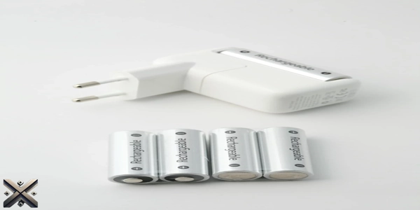
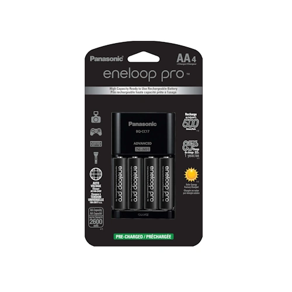
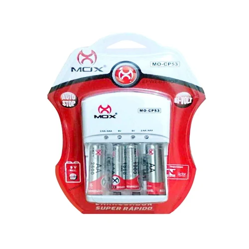
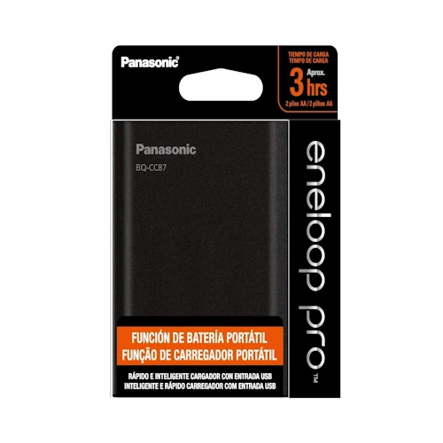
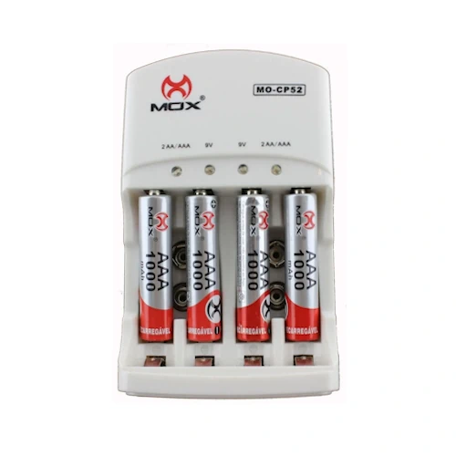
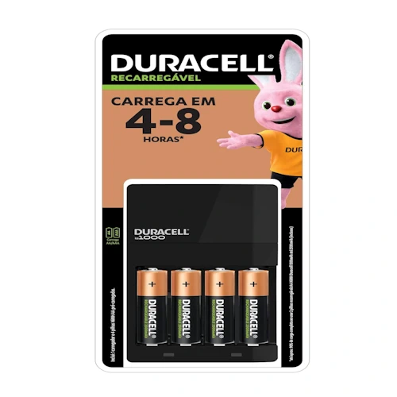

O carregador de pilhas tornou-se um item indispensável para quem deseja economia, praticidade e compromisso com o meio ambiente. Ele é ideal para alimentar dispositivos como controles remotos, videogames, lanternas e outros aparelhos eletrônicos, eliminando a necessidade de comprar pilhas descartáveis frequentemente.
Para te ajudar a escolher o modelo perfeito, nossa equipe testou e selecionou os cinco melhores carregadores de pilhas disponíveis no mercado em 2025. Confira abaixo a lista completa e descubra qual deles atende melhor às suas necessidades!

Imagem: Carregador de Pilha, autor wutthichai charoenburi, via Pexels.
O Que é um Carregador de Pilhas e Como Funciona?
Os carregadores de pilhas são dispositivos projetados para recarregar pilhas recarregáveis, proporcionando maior economia e reduzindo a necessidade de descarte de pilhas convencionais. O processo é simples e envolve a transferência de energia elétrica para as pilhas, permitindo seu uso repetido.
Funcionamento do Carregador de Pilhas
Conexão à Energia: O carregador deve ser ligado a uma tomada ou porta USB, dependendo do modelo.
Identificação da Carga: O dispositivo avalia a carga atual da pilha e inicia o carregamento conforme necessário.
Processo de Recarga: A corrente elétrica recarrega as pilhas, podendo levar de 1 a 8 horas, dependendo do modelo.
Indicação de Status: A maioria dos modelos conta com luzes LED que informam o andamento da recarga.
Desligamento Automático: Muitos carregadores modernos evitam sobrecarga, desligando-se automaticamente quando a carga é concluída.
Tipos de Carregadores de Pilhas
Rápidos: Modelos que carregam pilhas em poucas horas, ideais para quem tem pressa.
Inteligentes: Ajustam automaticamente a corrente elétrica e detectam problemas nas pilhas.
Universais: Compatíveis com diversos tamanhos de pilhas, como AA, AAA, C, D e 9V.
Portáteis: Pequenos e leves, podendo funcionar como power banks para outros dispositivos.
Vantagens de Usar um Carregador de Pilhas
Economia: Diminui a necessidade de comprar pilhas constantemente.
Sustentabilidade: Reduz a quantidade de lixo eletrônico e ajuda o meio ambiente.
Praticidade: Sempre garante energia disponível para seus dispositivos.
Segurança: Modelos modernos incluem proteções contra superaquecimento e curto-circuito.
O que Significa Quando o Carregador de Pilhas Fica Piscando?
Se o seu carregador de pilhas está piscando, isso pode indicar diferentes condições, dependendo do modelo e da cor do LED. Veja algumas possibilidades:
Carregamento em Andamento: Em alguns modelos, a luz piscando indica que a carga está acontecendo normalmente.
Pilhas com Defeito: Uma luz piscando rapidamente pode significar que as pilhas estão danificadas ou não são recarregáveis.
Contato Ruim: Pilhas mal encaixadas ou terminais sujos podem impedir o carregamento correto, fazendo o LED piscar.
Sobreaquecimento: Alguns carregadores piscam para alertar sobre superaquecimento e podem interromper a carga por segurança.
Erro de Tensão: Se a voltagem da pilha estiver muito baixa ou alta, o carregador pode piscar para sinalizar um problema.
Se o carregador continuar piscando e as pilhas não estiverem carregando corretamente, experimente testar com outras pilhas ou consulte o manual do fabricante para entender o que significa no seu modelo específico.
5. Panasonic Advanced BQ-CC17

Imagem: Carregador de Pilha, Panasonic Advanced BQ-CC17.
O Panasonic Advanced BQ-CC17 é um carregador de alta tecnologia, ideal para quem busca eficiência e durabilidade. Parte da renomada linha Eneloop, este modelo é reconhecido por sua construção robusta e velocidade de carregamento.
Compatível com pilhas AA e AAA.
Carrega até quatro pilhas simultaneamente.
Inclui quatro pilhas recarregáveis pré-carregadas com energia solar.
Avaliação média: ⭐ 4,7/5.
Preço aproximado: R$ 430.
4. Mox MO-CP53

Imagem: Carregador de Pilha, Mox MO-CP53.
O Mox MO-CP53 é uma excelente opção para quem procura versatilidade e segurança. Com compatibilidade para pilhas AA, AAA e 9V, esse modelo oferece um ótimo custo-benefício.
Sistema bivolt automático.
LEDs indicadores de carga.
Desligamento automático para maior segurança.
Avaliação média: ⭐ 4,5/5.
Preço aproximado: R$ 55.
3. Panasonic Smart & Quick BQ-CC87

Imagem: Carregador de Pilha, Panasonic Smart & Quick BQ-CC87.
O Panasonic Smart & Quick BQ-CC87 se destaca por sua funcionalidade dupla: além de carregar pilhas, também pode ser usado como um carregador portátil para celulares.
Compatível com pilhas AA e AAA.
Carregamento rápido e eficiente.
Porta USB para carregar smartphones.
Avaliação média: ⭐ 4,7/5.
Preço aproximado: R$ 280.
2. Mox CP-52

Imagem: Carregador de Pilha, Mox CP-52.
O Mox CP-52 é um carregador universal e acessível, ideal para quem busca eficiência sem gastar muito. Ele oferece um excelente desempenho, sendo uma opção prática e econômica.
Carrega até quatro pilhas ou duas baterias 9V.
LEDs indicadores individuais.
Desligamento automático para evitar superaquecimento.
Avaliação média: ⭐ 4,5/5.
Preço aproximado: R$ 60.
1. Duracell Recharger

Imagem: Carregador de Pilha, Duracell
O grande destaque da nossa lista é o Duracell Recharger. Esse modelo combina qualidade, segurança e ótimo custo-benefício, sendo uma escolha confiável para qualquer usuário.
Recarga rápida em até 4 horas.
Compatível com pilhas AA e AAA, inclusive de outras marcas.
Design compacto e portátil.
Avaliação média: ⭐ 4,9/5.
Preço aproximado: R$ 160.
Conclusão
Escolher um bom carregador de pilhas pode fazer toda a diferença na sua rotina, proporcionando economia e praticidade. Todos os modelos apresentados aqui possuem ótimas avaliações e garantem uma experiência segura e eficiente. Se um deles chamou sua atenção, não perca tempo e adquira o seu agora mesmo!
Gostou das nossas comparações dos 5 Melhores Carregadores de Pilhas em 2025?
Se você achou útil nossas dicas sobre os 5 Melhores Carregadores de Pilhas em 2025 ou ainda tem dúvidas, ficaremos felizes em ouvir sua opinião. Há algo que não entendeu ou gostaria de sugerir melhorias? Convidamos você a participar da nossa sessão de comentários no blog do Comparativos X.